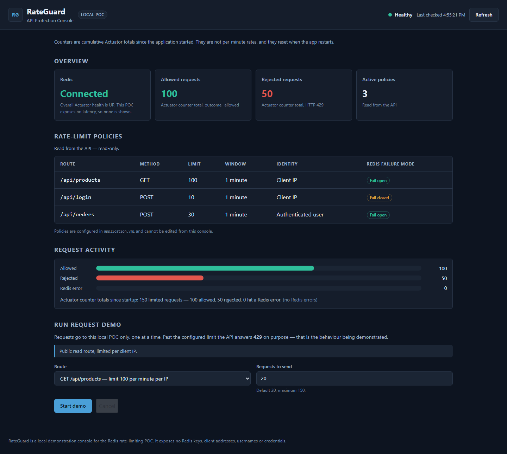
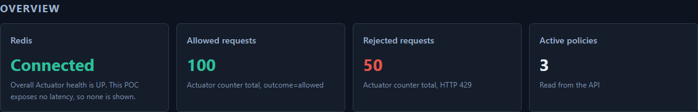
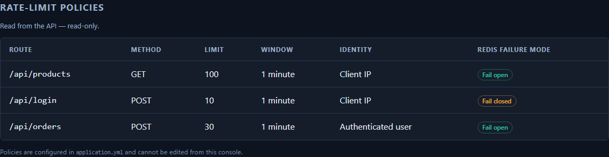
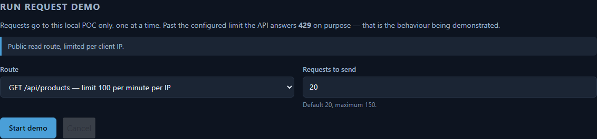
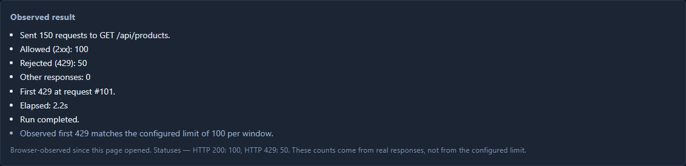
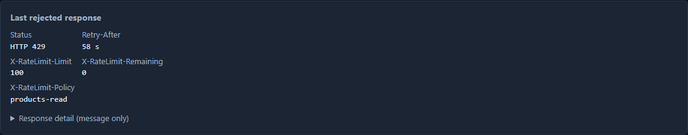
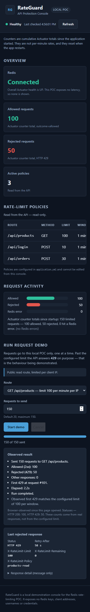
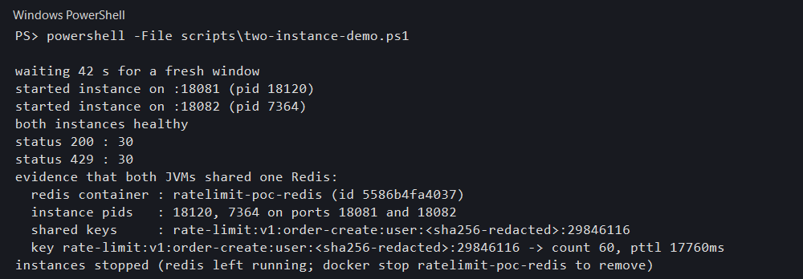

Proof of Concept — architecture, evidence and verification results
A working proof of concept for API rate limiting with Redis as the shared counter store, plus an Angular console that shows the limit being hit in a browser. Every number in this report was produced by running the code in this repository — nothing is projected or estimated.
| # | Claim | Evidence |
|---|---|---|
| 1 | A limit is enforced at exactly the configured number | First 429 at request #101 for a limit of 100 — §5.5 |
| 2 | Rejections are well-formed 429s, not dropped connections | Retry-After: 59 s, X-RateLimit-Remaining: 0 — §5.6 |
| 3 | The limit is global, not per instance | Two JVMs, one Redis key holding the shared count of 60 — §5.8 |
| 4 | Counters carry a TTL and reset per window | Key observed with pttl 17760 — §5.8 |
| 5 | Redis failure degrades predictably, not silently | Per-policy fail-open / fail-closed — §3 |
| 6 | The whole path is testable headlessly | 63 backend + 25 frontend tests, all green — §6 |
┌─────────────────────────────────────────────┐
│ Angular console (ng serve :4200) │
│ overview · policies · request demo · │
│ response inspector · two-instance view │
└───────────────────┬─────────────────────────┘
│ HTTP via proxy.conf.json
┌───────────────────▼─────────────────────────┐
client IP ────────►│ Spring Boot API (:8080) │
or user identity │ │
│ RateLimitInterceptor ──► policy lookup │
│ │ │ │
│ │ INCR key + EXPIRE │ │
│ ▼ ▼ │
│ 429 + standard headers Actuator counters │
└───────────────────┬─────────────────────────┘
│ Lettuce / commons-pool2
┌───────────────────▼─────────────────────────┐
│ Redis 7 (docker, :6379) │
│ ratelimit:{policy}:{identity} │
│ INCR + TTL → one shared counter │
└─────────────────────────────────────────────┘RateLimitInterceptor resolves the identity — client IP by default,
authenticated user when the request carries a session.INCR ratelimit:{policy}:{identity} runs in Redis. The first increment of a
window also sets the TTL, so keys expire on their own and cost nothing to clean up.count > limit the request is rejected with 429 Too Many Requests
carrying Retry-After, X-RateLimit-Limit,
X-RateLimit-Remaining and X-RateLimit-Policy. Otherwise the request
proceeds untouched — no added latency in the happy path.outcome=allowed /
outcome=rejected), which is what the console reads. The dashboard therefore shows
observed traffic rather than the configured limit.| Route | Method | Limit | Window | Identity | Redis failure |
|---|---|---|---|---|---|
/api/products | GET | 100 | 1 minute | Client IP | Fail open |
/api/login | POST | 10 | 1 minute | Client IP | Fail closed |
/api/orders | POST | 30 | 1 minute | Authenticated user | Fail open |
The split is the interesting part. A read-heavy catalogue route fails open — losing Redis costs a counter, not availability. A credential route fails closed — a lost Redis must never become unlimited login attempts. That asymmetry is the whole argument for per-policy failure modes, and it is precisely why a single global setting would be wrong here.
fail_open would quietly disable
brute-force protection on /api/login during a Redis incident. A global
fail_closed would take the entire catalogue offline during the same incident. Neither
default is acceptable, so the policy owns the decision.Java 21, Maven 3.9, Node 20+, Docker (for Redis).
docker run -d --name ratelimit-redis -p 6379:6379 redis:7-alpinecd redis-rate-limit-poc
mvn -B spring-boot:run # listens on :8080Verify with curl http://localhost:8080/actuator/health → UP.
cd frontend
npm install
npm start # :4200, proxies API calls to :8080The dev proxy keeps the browser same-origin, so there is no CORS configuration to get wrong.
| Script | What it does |
|---|---|
verify-all.ps1 | Full gate — health, policy enforcement, failure modes, two-instance sharing, Actuator evidence |
load-demo.ps1 | Burst through one instance, reports PASS / INCONCLUSIVE |
two-instance-demo.ps1 | Two JVMs against one Redis — the sharing proof |
Flags: -SkipBuild skips Maven, -SkipUnitTests skips the test phase. A
plain .\verify-all.ps1 runs everything.
All screenshots below were captured from the running console through headless Chromium. They are real runs.

Allowed 200, Rejected 100, Active policies 3. Redis
is reported Connected. These totals exceed the 100-per-window limit because they are
cumulative across every request the process has served, not a single window.



GET /api/products.
Remaining: 0 with a live
Retry-After is what stops a client from hammering a limit it has already reached.

Executed against the code in this repository. Environment: Java 21.0.12.1, Maven 3.9.16, Node 24.19.0, npm 11.17.0, Docker 29.8.0.
mvn -B clean verifyTests run: 63, Failures: 0, Errors: 0, Skipped: 0
BUILD SUCCESS in 47.7 sTestcontainers supplies a real Redis, so the fixed-window logic is exercised against Redis rather than a mock — the failure modes and TTL behaviour are covered for real.
npm testTest Suites: 5 passed, 5 total
Tests: 25 passed, 25 total
Time: 4.46 snpm run buildInitial total: 244.44 kB | Transfer: 66.15 kB
Build at: 4.847 s (application bundle)verify-all.ps1 -SkipBuild -SkipUnitTests| Route | Requests sent | First rejection | Configured limit | Verdict |
|---|---|---|---|---|
GET /api/products | 120 | #101 | 100 | PASS |
POST /api/orders | 45 | #31 | 30 | PASS |
Total runtime 133.50 s. Both routes enforced their configured limit at the exact request boundary.
two-instance-demo.ps189.3 s, all expectations met — see §5.8.
Stated plainly, because a POC that hides these is not a POC.
INCR + EXPIRE was chosen because the point of this POC is to show
shared state, not to be the most sophisticated limiter available.X-Forwarded-For. Behind a proxy this needs a trusted-proxy
allowlist. Fine for a POC, not for production..
├── redis-rate-limit-poc/ Spring Boot backend
│ ├── src/main/java/… interceptor, policies, endpoints, health
│ ├── src/main/resources/ application.yml
│ ├── src/test/java/… Testcontainers-backed tests
│ ├── scripts/ verify-all · load-demo · two-instance-demo
│ ├── docs/ deep design doc
│ └── README.md
├── frontend/ Angular 20 console
│ ├── src/app/core/ API client, config, demo runner, models
│ ├── src/app/features/ dashboard · request-demo
│ └── proxy.conf.json
└── docs/
├── screenshots/ the 8 images in §5
└── reports/ this reportThe Angular app sits at the repository root as a sibling of the Maven module rather than nested inside it.